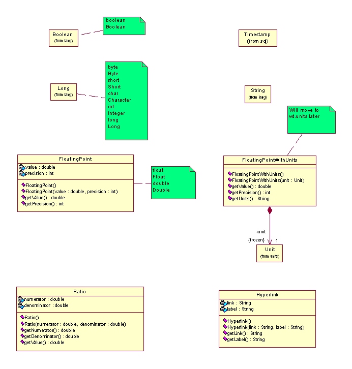

Attribute Content
The content associated with attributes in a container will in general be represented as one of the following eight data wrappers. (Or as a TypeInstance or TypeInstanceIdentifier for the content of associations.)
